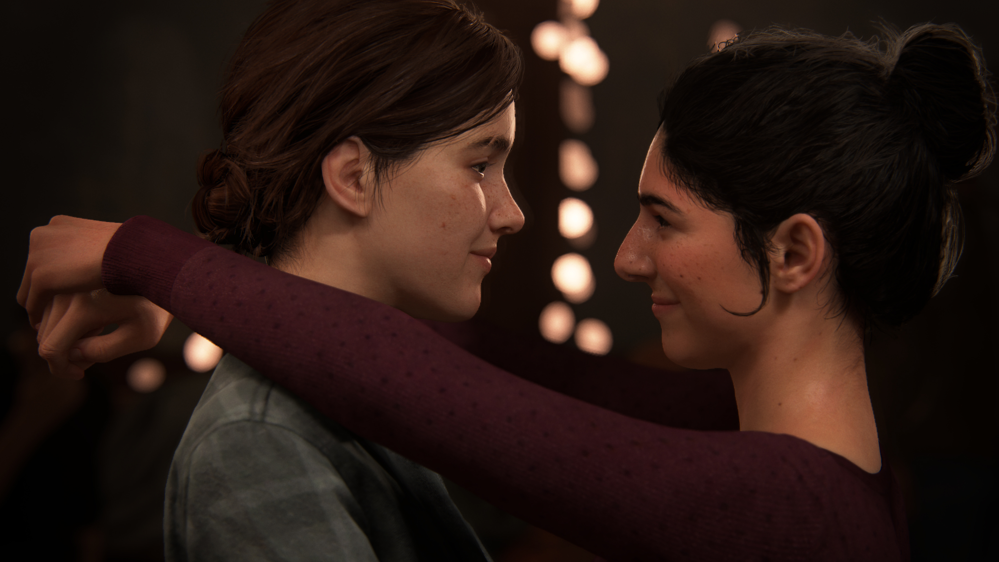
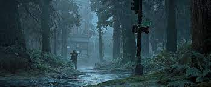

SINOPSE
Um mundo pós-apocalíptico dominado por um fungo conhecido como Cordyceps, que domina seus infectados humanos e os deixa furiosos e agressivos, este é o cenário onde Ellie, uma jovem sedenta por vingança, vai enfrentar as mais terríveis atrocidades e descobrir as próprias sombras que esconde dentro de si mesma.
ANÁLISE
HISTÓRIA
sem dúvidas a história de que The Last of Us Part II dividiu muitos fãs e um dos fatores que criaram essa divisão foram a alta violência gráfica, mas também as pautas políticas e socias que o game aborda e discorre. Para se fazer uma análise justa a respeito da história do game existem alguns critérios que vão além da "opnião pessoal", mas também alguns critérios socialmente júridicos e morais que são importantes manter, dito isto vamos a análise.
A história do game fala principalmente sobre vingança e os seus efeitos, são apresentadas duas personagens principais (Ellie e Abby) em uma jornada cheia de sangue e ódio, a narração do game não tem filtros nem censuras, é uma história densa e pesada, e incrivelmente bem contada, pois bem, se a proposta do game era mostrar os efeitos que a raiva e o desejo por vingança podem causar ele o fez com excelência. Durante o caminho se encontram muitos personagens, alguns novos e outros já presentes na Parte I, todos carismáticos e muito bem construidos, feitos com profundidade e verdade, a atenção dada a forma como nos ligamos aos personagens ao longo do game é muito bem feita e nem um pouco forçada, todos tem suas histórias e particularidades tornando-os únicos.
Dentre os pontos polêmicos abordados pelo game estão o fanatismo religioso e a lgbtfobia. Em se falando da crítica religiosa pode-se entender que todo e qualquer indivíduo tem direito a sua fé e crença, mas todos possuem o direito ao respeito e empatia e quando um indivíduo em nome de sua fé fere esses direitos ele está sujeito as consequências deste ato. Quanto a lgbtfobia, vale falar antes que no game temos um alto indice de representatividade LGBTQIAP+ de forma totalmente aberta e nunca vista nos games, temos uma personagem lésbica, Eliie, que passa por todo processo e dificuldades de se descobrir sofrendo o preconceito das pessoas a sua volta, bissexual, Dina, confiante e muito bem resolvida, mas também tendo que lidar com problemas d0 preconceito e por fim, um personagem transexual que passa pelas mesmas dificuldades e muito mais.
É necessário saber que os games não existem tão somente para entreter e passar o tempo para poder compreender a história deste jogo, mas estão aqui também como uma forma de arte, uma forma de expressão e crítica para nos fazer refletir sobre o mundo que vivemos aqui, na vida real. The Last of Us Part II não é um jogo para todos, mas para aqueles que o poderam enxergar, nunca mais esquecerão o que viram.
JOGABILIDADE
O game possui a mesma jogabilidade do primeiro, mas melhorada e com mais comandos possíveis. Você pode correr, andar, se agaixar, se arrastar no chão, pular, escalar, bater, atirar, construir objetos de sobrevivência, se esconder, executar inimigos de forma furtiva e coletar itens pelo cenário. Com uma jogabilidade completamente flúida e uma física muito bem desenvolvido The Last of Us Part II oferece uma imersão garantida em seu universo.
GRÁFICOS
Com gráficos dignos da geração que The Last of Us Part II representa ele não falha em nos tirar o ar com cenários totalmente cheio de detalhes e beleza graças a sua potência gráfica. O game no PS4 roda a 30fps, no PS4 PRO e PS5 a 60fps, são raros os problemas de renderização do cenário, mas hora ou outra ocorrem.
TRILHA SONORA
A trilha sonora de The Last of Us Part II faz juz ao mundo sombrio em que o game se passa, parte das músicas foram compostas pelo renomado compositor Gustavo Santaolalla, que fez seu trabalho com exelência tanto no primeiro, como no segundo game.